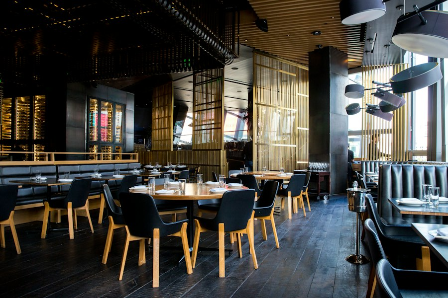

Italienisch · Ludwigsburg seit 1994
Ein Abend, an den du dich erinnerst.
Saisonale Küche, hausgemachte Pasta und Wein aus kleinen Weingütern. So schmeckt Italien, wenn man sich Zeit nimmt.
Di – Soab 17:30 Uhr · Mittagstisch Mo – Fr
Saisonale Küche, hausgemachte Pasta und Wein aus kleinen Weingütern. So schmeckt Italien, wenn man sich Zeit nimmt.


Geburtstag, Firmenfeier oder Hochzeit: Wir planen Menü und Ablauf mit dir, damit du selbst Gast sein kannst.
Online in 30 Sekunden oder telefonisch unter 07141 000 000.